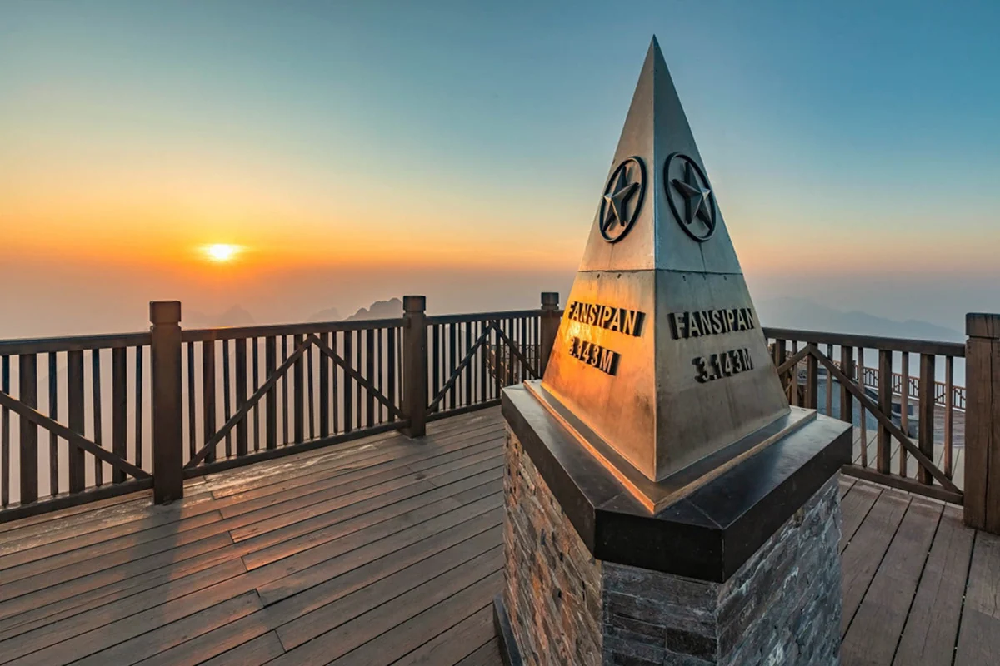
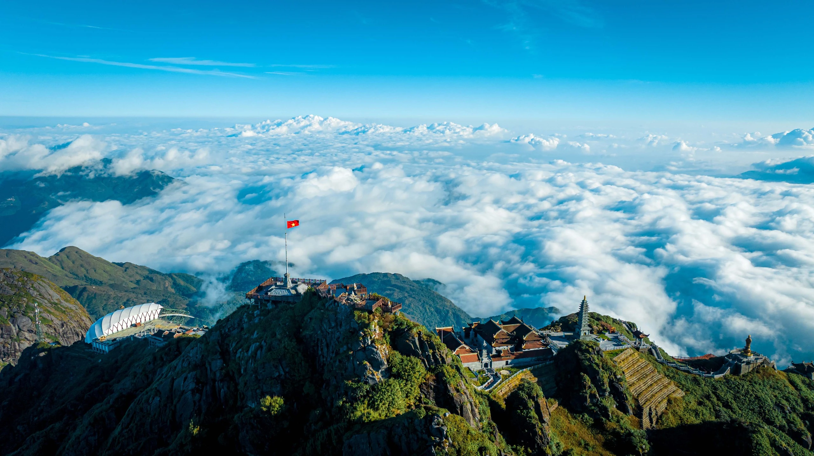

Sapa - Đỉnh Fansipan Hùng Vĩ
"Sa Pa là một điểm du lịch cách trung tâm thành phố Lào Cai khoảng hơn 30 km. Nằm ở độ cao trung bình 1500 – 1800 m so với mặt nước biển, Thị Trấn Sapa luôn chìm trong làn mây bồng bềnh, tạo nên một bức tranh huyền ảo đẹp đến kỳ lạ. Nơi đây, có thứ tài nguyên vô giá đó là khí hậu quanh năm trong lành mát mẻ, với nhiệt độ trung bình 15-18°C."


Điểm nổi bật của Tour
- Tận hưởng không khí trong lành: Trốn khỏi sự ồn ào để đến với vùng cao Sapa đầy sương mù trong chuyến đi 2 ngày từ Hà Nội.
- Trải nghiệm giản dị ấm cúng: Dạo bước trên những con đường đá, thác nước và các gian hàng thủ công H’Mông tại bản Cát Cát.
- Checkin thả ga: Chụp ảnh tại các điểm ngắm cảnh nghệ thuật của Moana Sapa nhìn ra thung lũng.
Lịch trình tóm tắt (2N1D)
- Bắt đầu hành trình 2 ngày 1 đêm đầy sảng khoái đến Sa Pa với dịch vụ đưa đón thoải mái từ TP.Vinh.
- Đến Sapa và khám phá bản Cát Cát, nơi bạn có thể tìm hiểu văn hóa địa phương và chiêm ngưỡng những thửa ruộng bậc thang cùng thác nước tuyệt đẹp.
- Vào ngày thứ 2, hãy chọn chinh phục Fansipan bằng cáp treo hoặc đi bộ đường dài qua các bản làng, thung lũng.